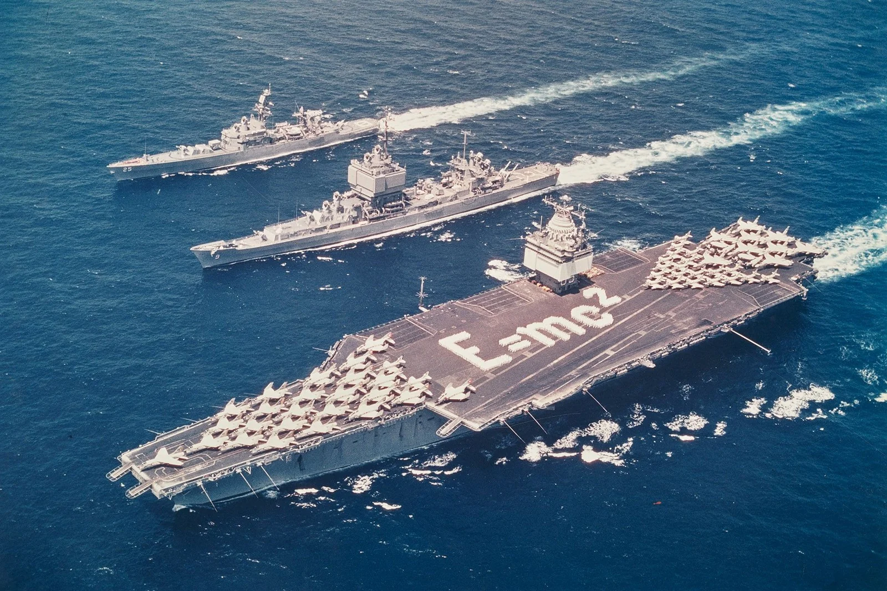
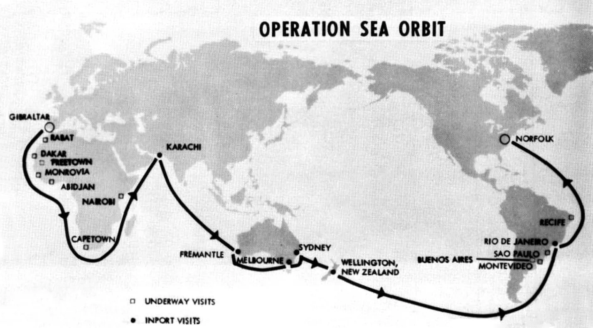
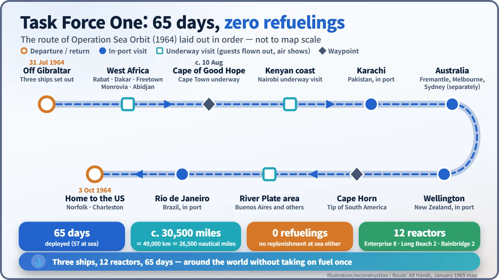

Nuclear History · 167
E=mc² Spelled Out in Sailors — Operation Sea Orbit, the Nuclear Task Force That Circled the Globe Without Refuelling (1964)
Three ships and twelve reactors went round the world without taking on fuel once, but the storerooms still had to be full.
From 31 July to 3 October 1964, the US Navy's Task Force One, made up of the nuclear-powered carrier Enterprise, cruiser Long Beach and frigate Bainbridge, sailed around the world without refuelling or replenishment. Operation Sea Orbit lasted 65 days and covered roughly 49,000 km. It showed what nuclear propulsion had removed, the need to refuel the ships, and what it had not: food, jet fuel and spare parts still had to be carried.
A formula written in sailors
Seen from the air, the flight deck of the aircraft carrier carries a message in white letters: E=mc². It is not paint. It is hundreds of sailors in white uniforms standing in formation. Alongside, a cruiser and a frigate cut through the water. The three ships had one thing in common: none of them burned oil to move. All three ran on nuclear reactors.

The Navy released the photo at the end of July 1964. Its exact date is uncertain: the Commons file gives 31 July, while the Naval History and Heritage Command caption says it was probably taken in June or July and released on 30 July. [1] Either way, the ships in it were about to sail around the world. The operation's name was Sea Orbit, as if the ships were going into orbit on the ocean.
A fleet built from twelve reactors
By the early 1960s the US Navy had three nuclear-powered surface ships. The cruiser Long Beach (CGN-9), commissioned in September 1961, was the world's first nuclear-powered surface combatant. The carrier Enterprise (CVAN-65), commissioned that November, was the first nuclear carrier and held eight reactors. The frigate Bainbridge (DLGN-25) joined in October 1962. With two reactors each in Long Beach and Bainbridge, the three ships carried twelve reactors between them.
On 13 May 1964, off Mallorca in the Mediterranean, the Navy grouped them as Task Force One, the first task force made up entirely of nuclear-powered ships. [2] It was commanded by Rear Admiral Bernard M. Strean (1910–2002), commander of Carrier Division Two. A fighter pilot by background, he had won the Navy Cross leading his squadron at the Battle of the Philippine Sea in June 1944, and he flew his flag in Enterprise.
Remembering a coal-fired fleet
The idea is credited to Vice Admiral John S. McCain Jr. He was thinking of the Great White Fleet, the sixteen battleships that sailed around the world between December 1907 and February 1909. That fleet had to take on coal again and again along the way. This time the point was to go round without refuelling at all. [5]
On 31 July 1964 the three ships left the area off Gibraltar. The day before, they had loaded as much food and stores as they could hold, because the plan was to meet no supply ship during the voyage.
Visiting without going into port
The route ran down the west coast of Africa: Rabat, Dakar, Freetown, Monrovia, Abidjan. The task force did not enter these ports. Instead it flew local dignitaries out to the ships or put on flying displays offshore, then moved on. The route map published by the Navy magazine All Hands marks these separately as "underway visits".
Around 10 August the ships rounded the Cape of Good Hope, passed the Kenyan coast and called at Karachi in Pakistan. In Australia they split up to visit Fremantle, Melbourne and Sydney separately, then went on to Wellington in New Zealand and across the South Pacific. After rounding Cape Horn they called at Rio de Janeiro. On 30 September Bainbridge broke off for Charleston, and on 3 October 1964 all three were home.


30,000 miles or 26,000? Why the numbers disagree
The deployment lasted 65 days, 57 of them at sea. The distance depends on whom you ask. PBS's Frontline calls it "a historic 30,565-mile voyage around the world, accomplished without a single refueling or replenishment," [3] while the Wikimedia Commons description of the formation photo says 26,540 nautical miles. One figure is in statute miles (1.609 km), the other in nautical miles (1.852 km). Converted, 30,565 statute miles is about 26,560 nautical miles, so they describe essentially the same voyage. Other totals, such as 30,216 miles, also circulate. The safe summary is roughly 49,000 km, about 1.2 times the Earth's circumference.
The physics is simple. The uranium in a reactor core holds years' worth of heat, so a two-month voyage posed no fuel problem. By my own calculation the ships averaged about 470 nautical miles a day, a little over 19 knots.
What nuclear power removed, and what it did not
A common misunderstanding is worth clearing up. "No replenishment" refers to the fuel that moves the ship. Reactors do not make food for the crew, jet fuel for the aircraft, lubricating oil or spare parts. The storerooms filled before departure were the real limit on how long the task force could stay out.
![Comparison table: the Great White Fleet of December 1907 to February 1909 had 16 battleships, took about 14 months, burned coal reloaded along the way in boilers and steam engines, and carried coal, food and water; Task Force One of 31 July to 3 October 1964 had 3 nuclear-powered ships, took 65 days with 57 at sea, used uranium cores with zero refuelings and 12 reactors with steam turbines, and still carried food, jet fuel, lubricants and spare parts. A side panel converts 30,565 statute miles to about 49,190 km and about 26,560 nautical miles](../../assets/images/history/167-operation-sea-orbit/fig2-coal-vs-nuclear.webp)
The point was still made. Writing in the US Naval Institute's Proceedings in March 1965, Strean said the force "could have been diverted to any other maritime area of the world without logistical considerations." (Quoted from secondary sources; the original article could not be checked.) [4]
Nuclear surface ships did not become the norm overnight, however, because they were expensive to build. Sea Orbit was a demonstration that it could be done. Right after the cruise, in October 1964, Enterprise went into the shipyard for her first refuelling.